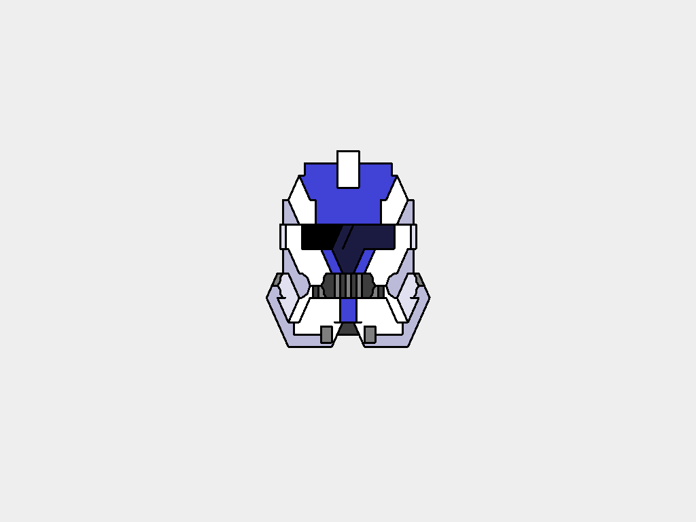

All ASCII art is automatically posted to the Home Collection. We do not yet have a way to add posts to other collections, or to view them like a gallery (which is what the Browse page will be for). To get the Text-To-Image photo you want from your ASCII art, please head to our GitHub page for a look at the software:
